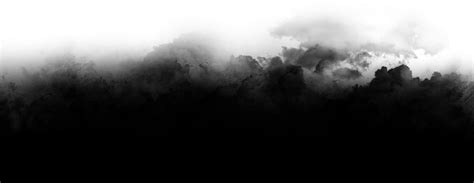

From the Pages of "Lindsay and Brizo"
This is a story about the lands' WARRIOR Princess Lindsay and her Trusty Sidekick; BRIZO.

Once upon a time, the ancient Princess Lindsay was riding her beloved Shark, CETO (Keto). CETO was born with a rare gift of lasers. These laser helped Lindsay protect her land and people. One day on patrol, Lindsay noticed a strange, dark
black smoke in the distance. Her and CETO swam up to investigate.

As they approached the object they realize it was a strange yet beautiful creature. A creature never seen before, with sweet eyes, and powerful wings.

Brizo and Lindsay were an unforgettable site. Some say he was sent from the Gods. The Warrior Princess and her new friend spent all day and all night together. They would roam the lands, with Ceto, and have adventures beyond your wildest dreams.